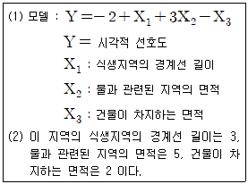
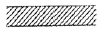
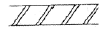
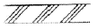
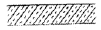
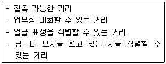
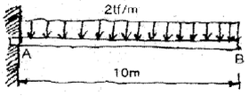
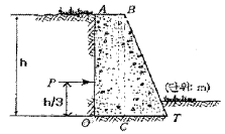
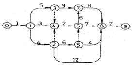

1과목: 조경사
1. 영국의 Landscape Carding School에 관련된 설명으로 틀린 것은?
2. 일본 헤이안(平安)시대는 정토(淨土)신앙 사상이 정원과 건축에 영향을 미쳤다. 이러한 사상을 나타낸 대표적인 것은?
3. 고려시대의 궁 중 특히 풍수지리설의 영향으로 인해 자연풍경이 수려한 곳에 주위 경관과 조화되도록 자연을 그대로 이용하여 꾸며진 곳은?
4. 다음 중 중세 장원제도(feudal system)속에서 발달된 조경 양식의 특징은?
5. 다음 중 일부 무로마찌시대의 축산고산수 수법으로 축조된 대표적 정원은?
6. 소쇄원에는 다양한 식물이 도입 되어 있었음을 김인후의 소쇄원 48명과 그 밖의 몇 가지 시문을 통해서 알 수 있다. 소쇄원에 심어진 식물 중 국내 야생종 이었던 것은?
7. 정원 공간을 원로나 혹은 수로에 의해 기하학적으로 4등분 하여 만들어지지 않은 곳은?
8. 조선시대 강희안이 조경식물에 대한 양화소록(養花小錄)을 저술하였 는데 "양화(養花)"가 의미하는 것은?
9. 문화재와 같이 인간의 생존환경을 주체로 하는 환경대책으로 적합한 용어는?
10. 유럽 낭만주의 시대의 풍경식 조경은 동양의 이국적 취향을 불러 일으켰다. 영국의 큐 가든(Kew garden)에 중국식 풍경을 가장 잘 나타 내게 한 대표적인 첨경물은?
11. 르 노트르 정원을 구성 할 때 여러 가지 화단으로씨 화려하게 장식하였다. 그 가운데 회양목으로만 대칭형 무외를 만드는 화단의 명칭은?
12. 한국정원의 가장 올바른 감상법은?
13. 풍경식정원의 변화과정을 보여주는 사례로 베르사유궁전과 같이 절대적 군주의 위엄을 나타내는 환경을 겨냥하였지만 자유주의적인 ‘의그(whig)당’의 사상을 표현한 사례는?
14. 수도원 정원에서 두 개의 직교하는 원로의 교차점을 가리키는 것은?
15. 프랑스 르 노트르식 정원의 총림(bosquet) 유형 중 잔디밭 가운데에 수목이 V자형으로 식재 된 것은?
16. 동양 조경공간 속에 만들어졌던 유상곡수연시설(流觸曲水宴施設)과 관련이 없는 것은?
17. 일본의 모모야마(한문)시대에 발달한 다정의 시설물이 오늘날 일본 정원의 점경물로 널리 쓰이는 것은?
18. 우리나라 정원의 석가산 기법에 대한 설명 중 틀린 것은?
19. 다음 일본정원과 관련된 내용 중 연결이 틀린 것은?
20. 고려시대 궁궐의 정원을 지칭한 용어는?
2과목: 조경계획
21. 조경의 대상 중 포괄적 의미의 도시공원녹지(Urban open space)에 직접적으로 포함되지 않는 경우는?
22. 프로그램(program)의 설명으로 부적합한 것은?
23. 출입구가 2개 이상일 때 차로의 너비가 가장 큰 주차 형식은?
24. 다음 중 자연공원법령에서 정하는 공원시설의 종류 및 분류가 틀린것은?
25. 동일한 모재로부터 형성된 토양이며, 지명에 따라 명명한 토양분류는?
26. 주택단지의 밀도 중 주거목적의 주택용지만을 기준으로 한 것을 무엇이라 하는가?
27. 연간 이용자 수가 895000명 이며, 최대일 이용자가 36500명 이라고할 때 최대일률을 감안한 계절형은 다음 중 어디에 해당하는가? (단, 1계절형:1/30, 2계절형:1/40, 3계절형:50/1, 4계절형:1/100)
28. 도시계획지역내 지정된 어린이공원의 면적과 유치거리 기준으로 옳은것은?
29. 도시공원 및 녹지 등에 관한 법령상 소공원 및 어린이공원등의 공원조성계획의 정비를 요청할 수 있는 주민의 요건으로 맞는 것은?
30. 휴게시설 중 벤치의 배치는 소시오페털(sociopetal)한 형태를 위하여야 하는데, 그것은 다음 인간의 욕구 중 어디에 해당 하는 가?
31. 레크리에이션 계획의 접근방법에 대한 설명 중 맞는 것은?
32. 자연공원법상의 공원기본계획 미치 공원계획에 관한 내용 중 틀린것은?
33. 우리나라 도시공원 및 녹지 등에 관한 법률에서 분류된 도시공원의 분류가 아닌 것은?
34. 도시공원 및 녹지 등에 관한 법률의 광역권 근린공원이 그 기능을 충분히 발취 할 수 있는 장소의 설치 규모 기준은?
35. 환상방사형 녹지가 많은 계획가들에 의하여 선호되는 이유로 합당하지 않은 것은?
36. 주택건설기준 등에 관한 규정의 어린이놀이터에 관한 설명중 틀린것은?
37. 주어진 시각적 선호모델과 독립변수들의 왔을 사용한 특정지역의 시각적 선호도 값은?

38. 주택건설기준 등에 관한 규정 중 공동주택을 건설하는 주택단지에는 폭 몇 미터 이상의 도로를 설치하여야 하는가?
39. 주거단지 계획에 쿨데삭(cul-de-sac)도로를 도입시 가장 큰 장점은?
40. 자연공원법에 명시된 자연공원의 용도지구가 아닌 것은?(오류 신고가 접수된 문제입니다. 반드시 정답과 해설을 확인하시기 바랍니다.)
3과목: 조경설계
41. 장애인 및 노약자들이 이용할 수 있는 경사로의 설계 기준중 부적합한 것은?
42. 양 종단의 표고차 5m인 구간에 있어 자전거 도로의 오르막 최대 경사(7%)를 적용하면 그 수평 길이는 어느 정도가 가장 바람직한가?
43. 피보나치(fibonacci)급수에 대한 사항으로서 틀린 것은?
44. 다음 투시도의 성격에 대한 설명 중 틀린 것은?
45. 경관을 구성하는 데 있어 지배적인 우세요소가 아닌 것은?
46. 칼 융(Carl Gustav Jung)이 말한 “인간의 집단적 잠재의식과 보편적 원형(universal archetypes)의 동질성“에 대한 설명으로 틀린 것은?
47. 도면 표시 방법 중 일반적으로 사용하는 가공석레의 마감 표시 방법은?




48. 설계시 녹지 식재면의 표면배수 기울기로 가장 적합한 것은?
49. 날이 어두워지면 명소시와 암소시 중간 정도의 밝기에서 추상체와 간상체 양쪽 모두가 작용하게 되는 시각 상태를 무엇이라고 하는가?
50. 일반적으로 구분하는 투시도의 종류로 볼 수 없는 것은?
51. 포장설계와 관련한 다음 설명 중 틀린 것은?
52. 다음 색체 용어 중 밸류 키(Value Keys)가 가리키는 것은?
53. 다음 중 가는 파선 또는 굵은 파선의 사용 용도로 가장 적합한 것 은?
54. 다음 거리와 식별 정도를 구분하는 기준으로 각각 적합하게 구성된 것은?

55. Berlyne의 미적반응 과정 순서로 옳은 것은?
56. 시각적 의사전달체계(graphic communication system)수립시 유의할 사항이 아닌 것은?
57. 도로설계에서 곡선부의 선형은 보통 원곡선을 사용한다. 다음중 원곡선의 종류가 아닌 것은?
58. 오른손을 쓰는 설계자가 제도판 및 제도 책상 위에 일반적으로 놓는 제도용구의 설명으로 틀린 것은?
59. 도시경관 구성원리중 여기, 저기(Here and There)라는 개념이 있다. 아래의 공간구성 원칙 중 가장 가까운 것은?
60. 다음 그림은 도로가에 있는 안전표지이다. 바탕색으로 가장 적당한 것은?
4과목: 조경식재
61. 다음 중 자연 풍경식 식재의 기본 양식으로 맞지 않는 것은?
62. 다음 중 도로의 절사면이나 식생의 상부로부터 하부로의 변화에 가장 적합한 조사법은?
63. 다음 수목 중 차폐 식재용 수목으로 부적합한 것은?
64. 다음 중 한성(限性) 또는 능성(龍性) 음지식물(바地植油)이 아닌 수종들만 나열된 것은?
65. 뾰족한 산 정상에 식재할 때 가장 잘 조화가 되는 수목의 형태는?
66. 다음 수목 중 소나무류(pinus)에 속하지 않는 것은?
67. 잔디 식재 공법으로 공사기간의 단축이 용이하고, 광대한 면적에 빠른 시공이 가능한 공법은?
68. 나무를 이식하기 위하여 뿌리분을 뜨려고 한다 근원 직경이 25cm 일때 근원간주(程元幹周)로부터 뿌리분 가장자리까지의 거리는 얼마로 해야 하는가? (단, 상수는 4로 한다.)
69. 다음 비오톱에 관한 설명 중 틀린 것은?
70. 산울타리용으로 개나리, 사철나무, 히말라야시이다 등이 갖는 공통적인 특징은?
71. 꽃은 총상화서로 1년에 2회 피지만 봄철의 꽃은 열매를 맺지 못한다. 또한 가지는 가늘고 길어서 밑으로 축 쳐지며 잎이 부드러운 침형인 수종은?
72. 다음 중 침엽수인데 잎이 낙엽되는 수종으로만 나열된 것은?
73. 다음 Juniperus 속 중 침엽이 없고, 벽면의 강한 반사열에 견디는 힘이 강하여 벽면식재에 주로 사용되는 수종은?
74. Magnolia 속의 재배적 특성 설명으로 가장 부적합한 것은?
75. 노각나무의 학명으로 바르게 표기된 것은?
76. 개화하는 순서대로 옳게 배열된 것은?
77. 일반적으로 식물의 생육에 유효한 수분인 모관수(毛管水)의 pF 범위는?
78. 비탈면(法面)의 경사도에 대한 설명으로 틀린 것은?
79. 가을에 다른 나무에 비해 비교적 일찍 붉게 단풍이 들고 내음성이 있어 교목하에 군식이 용이하고, 옻나무과이나 옻을 탈 염려가 없어 정원에 심어 계절감을 느낄 수 있는 수종은?
80. 수목 굴취시 천근성 나무의 분의 모양은?
5과목: 조경시공구조학
81. 조적공사에서 벽돌의 종류와 쌓기 방법에 EKfms 수량(m2당) 기준으로 틀린 것은?
82. 특명입찰(수의계약, indinidual negotiation)을 요하는 공사가 아닌 것은?
83. 다음 그림과 같은 캔틸레버보 AB에 2tF/m의 등분포하중이 최대휨모멘트 값MB는?

84. 다음 토적 계산 방법들 중 가장 오차가 적은 것은?
85. 콘크리트 타설 작업 후 발생하는 블리딩(bleeding)현상의 설명으로 옳은 것은?
86. 그림과 같은 상재하중이 없는 중력식옹벽이 작용하는 토압은? (단, 무근콘크리트 중량 : 2300kgf/m3, 보통흙의 중량 1300kgf/m3, h : 2.5m, 토압계수 : 0.286으로 한다.)

87. 도로설계에서 원곡선을 설치할 때 원곡선에 2개의 점선이 교점B에서 교차 한다. 접선 AB의 방위는 N6O˚ 25'E 이고, 접선 CB의 방위는 S45˚ 10'E일 때 교각은? (단, A는 곡선의 시점, C는 곡선의 종점이다.)
88. 물이 흐르는 도수로의 횡단면을 설명한 것 중 틀린 것은?
89. 석재의 다듬기 마무리 표면처리방법으로서 쇠메(쇠망치)로 쳐서 다듬는 거친 질감의 표면처리는?
90. 조명시설의 용어 중 단위 면에 수직으로 투하된 광속밀도를 가르키는 용어는?
91. 다음 중 할증에 관한 설명으로 옳은 것은?
92. 비철 재료중 고온저항이 크며 내해수성이 우수하고 염산, 유산, 초산에 대한 저항과 강도의 중 대비가 금속공업재료 중 가장 크며 비중이 약 4.5인 재료는?
93. 쌓기 단수는 쌓을 수 있는 최대로 할 때, 시멘트 500포대를 저장할수 있는 가설창고의 필요 면적으로 옳은 것은?
94. 물체에서 작용하는 크기가 같고 방향이 반대인 평행한 힘을 가리키는 것은?
95. 다음 중 시공관리의 3대 목표가 아닌 것은?
96. 공사 발주처에서 작성되는 다음의 공사 원가계산 항목 경비에 속하지 않는 것은?
97. 살수관개에 관한 사항 중 옳은 것은?
98. 수화열이 낮고 수축량이 적으며, 내황산염성이 풍부한 시멘트로 침식성 용액에 대한 저항이 크며, 내구성이 풍부하여 포장이나 댐 같은 매스(mass)콘크리트, 차페용 콘크리트 등에도 사용되는 것은?
99. 1m x 2m 인 콘크리트 단면에 100tf의 압축력이 작용할 때 이단면의 압축 응력은?
100. 다음 건설재료중 할증률이 5%가 되는 재료는?
6과목: 조경관리론
101. 다음 그림의 네트워크 공정표에서 최장경로와 공기를 나타낸 것중 맞는것은?

102. 시멘트 저장에 관한 설명으로 옳은 것은?
103. 카이로몬(Kairomone)에 해당되는 경우는?
104. 잔디밭의 클로버 제초로 사용하는 것은?
1⑤. 국민에 의한 국토보전, 관리 뿐 아니라 국민 자신의 손으로 가치있는 아름다운 자연과 역사적 건축물을 기증, 구입등의 방법으로 입수하여 보호, 관리하고 공개한다는 취지를 갖고 창립된 단체는?
106. 다음 중 항바이러스성 물질로 병든 식물체에 살포하거나 주입하면 병징이 억제되는 것은?
107. 비탈면 보호시설 공법의 설명으로 옳은 것은?
108. 다음 중 소나무류에 주로 피해를 주는 주요 해충이 아닌 것은?
109. 콘크리트 포장 부분을 보수하려고 한다. 콘크리트 포장이 불가능한 기온은 몇 ℃ 이하 인가?
110. 조경관리에 있어서 안시타인이 설명한 주민참가 3단계중 시민권력의 단계에 속하지 않는 것은?
111. 지주목 설치의 장점이 아닌 것은?
112. 조경수목에서 굵은 가지 솎기나 베어내기와 같이 수형을 다듬기위한 강전정을 실시해도 나무의 손상이 적은 시기의 전정은?
113. 안전대책 중 사고처리의 일반적인 순서로서 가장 알맞은 것은?
114. 건물의 청소작업 할당시 개인할당 작업의 장점이 아닌 것은?
115. 돌 붙임공, 블록 붙임공에서 유지관리 항목에 포함되지 않는 것은?
116. 조경공사에 있어서 공기를 단축시키면 직접비와 간접비에 어떠한 영향을 미치는가?
117. 공원녹지 내 행사(Event)개최의 필요성과 의의가 아닌 것은?
118. 조경에서 사용되는 농약의 독성을 표시하는 단위에서 LD50 이란?
119. 줄기의 같은 높이에서 서로 반대되는 방향으로 마주 자란 가지를 무엇이라 하는가?
120. 유지관리계획 수립시 영향을 미치는 주요 요인이 아닌 것은?